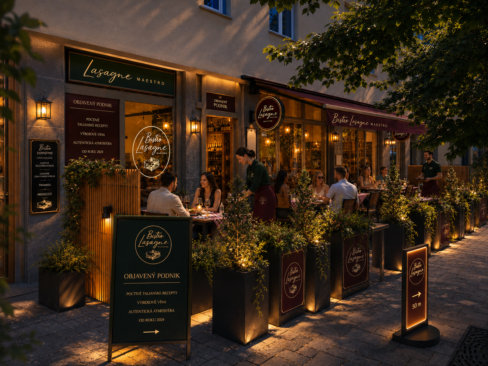

Italian bistro · lasagne house · wine evening
Lasagne ako večerný rituál.
Elegantné bistro pre hostí, ktorí nehľadajú rýchly obed, ale teplé svetlo, dobré víno a lasagne pripravené s pokojom talianskej kuchyne.

Dnes odporúčame
Lasagne Maestro Signature
ragú · bešamel · parmezán · bazalka
Palazzo atmosféra
Nie obyčajná reštaurácia. Malý taliansky salón pre lasagne.
Nový vizuál stránky je postavený na svetlom luxuse: mramorová krémová, nočná modrá, šampanské zlato a jemná terakota. Cieľ je, aby už prvý pohľad hovoril: tu sa podávajú lasagne, víno a zážitok.
Vrstvy, ktoré majú čas.
Lasagne Maestro stojí na detailoch: pomaly pripravené ragú, jemný bešamel, vôňa parmezánu a servis, ktorý necháva večeru plynúť bez zhonu.
- 01 domáce receptúry inšpirované Talianskom
- 02 párovanie s vínom a večernou atmosférou
- 03 terasa pre letné večery a romantické rezervácie
Menu signature
Hlavná hviezda je vždy lasagne.
Krátka a jasná ponuka, ktorá nevyzerá ako obyčajné obedové menu. Každá karta môže neskôr viesť na detail, cenu alebo dennú špecialitu.
Večer v bistre
Svetlo sviečok, pohár vína a vôňa zapekaných lasagní.
Stránka je navrhnutá tak, aby sa dala rozširovať: sezónne menu, fotky jedál, novinky z terasy, darčekové poukazy alebo samostatná stránka s denným menu.

Fotogaléria
Podnik, terasa, jedlá, detaily.
Il team
Ľudia, ktorí tvoria Maestro.
Majstri vrstiev
Pripravujú ragú, bešamel a zapekané lasagne tak, aby každá porcia držala charakter podniku.
Hostitelia večera
Vítajú hostí, odporúčajú víno a starajú sa o to, aby návšteva pôsobila osobne, nie anonymne.
Duša konceptu
Drží atmosféru, výber chutí a detail, vďaka ktorému je z obyčajnej večere malý taliansky zážitok.
Rezervácia
Napíšte nám rezerváciu priamo cez WhatsApp.
Formulár pripraví správu so všetkými údajmi. Hosť ju už len odošle cez WhatsApp a tím Lasagne Maestro ju potvrdí.